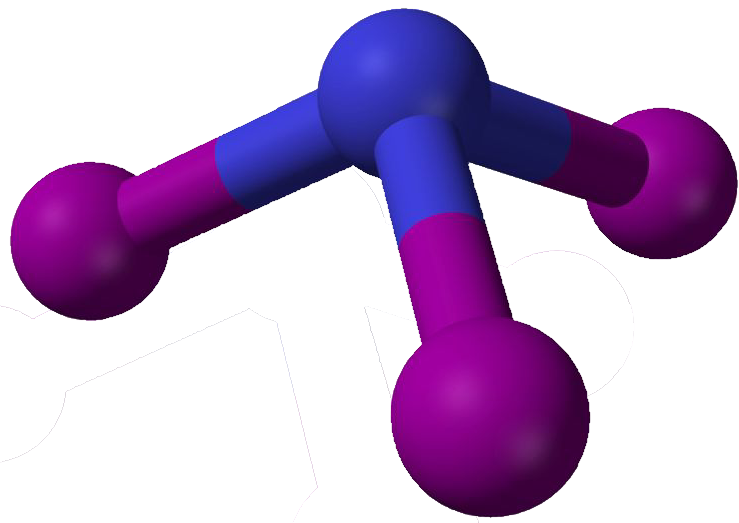

Contact Explosives
Contact explosives are explosives that explode with small amounts of stimuli. There are multiple reasons for contact explosives to be reactive. Reasons include:
- Presence of nitrogen. This will make things very reactive and explosive due to the fact that nitrogen in regular form is very stable, meaning the nitrogen will want to "escape" the explosive moplecule to become diatomic nitrogen, causing a massive release of energy that is easily triggered.
- The presence of an oxidizer and a fuel. The presence of an oxidizer and a fuel in the presence of something that is normally flammable will cause the burning to become explosive and happen faster and release more energy. This is why gunpowder is explosive.
- Unstable cemical shape. Unequal electron distribution, weak chemical bonds, and an unstable chemical structure. Unstable bonds can cause the molecule to break apart explosively, and unstable chemical structure such as cramped atoms and etc. can cause the molecule to be explosive too. Nitrogen triodide is a good example for this because it has both weak bonds and the iodine atoms are very cramped together, causing nitrogen triiodide to be very reactive to the slightest touch.
-  *note that the iodine atoms are actually alot larger than shown.
Different contact explosives
- As you already know, nitrogentriiodide is explosive because of the unstable bonds and cramped iodine atoms.
- Nitroglycerine, already mentioned up there as dynamite, isn't as reactive as nitrogen triiodide but is still pretty explosive. It's explosive because of the nitrogen groups on it.
- Azidoazide azide, the most explosive and reactive chemical ever created. It is presumably explosive because of the 14 nitrogen atoms and maybe electron inbalance but it's very hard to tell beacuse it will explode no matter what. It is so explosive it explodes instantly at any attempt to analyze or move it. They put some of it in a dark humidity controlled room with radiation protection and temperature control, and it just exploded for no reason. Scientists still don't know exactly what makes it so explosive because they can't analyze it.
- Acetone peroxide, which used to be particularly dangerous due to the fact that it couldn't be detected via conventional explosive detectors until 2015, meaning that it was very dangerous. Most bombings so far have been the product of acetone peroxide.